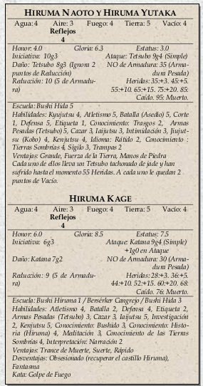

|  |
Hiruma Kage (Gloria 8.5, Estatus 7.5): Daimio de la familia Hiruma. Bersérker fanático y general Cangrejo al que se le tuvo
que arrastrar físicamente fuera del castillo Hiruma hace unos años cuando trató de retomarlo.
Es posible que los personajes le vean escaleras abajo haciendo vida social de buen humor; está enamorado y todo le va bien.
Cuatro guardias Hida de rango cinco le acompañan en todo momento, armados con espadas y lanzas. Puedes encontrar los atributos de
Kage en la segunda parte de esta aventura.
|